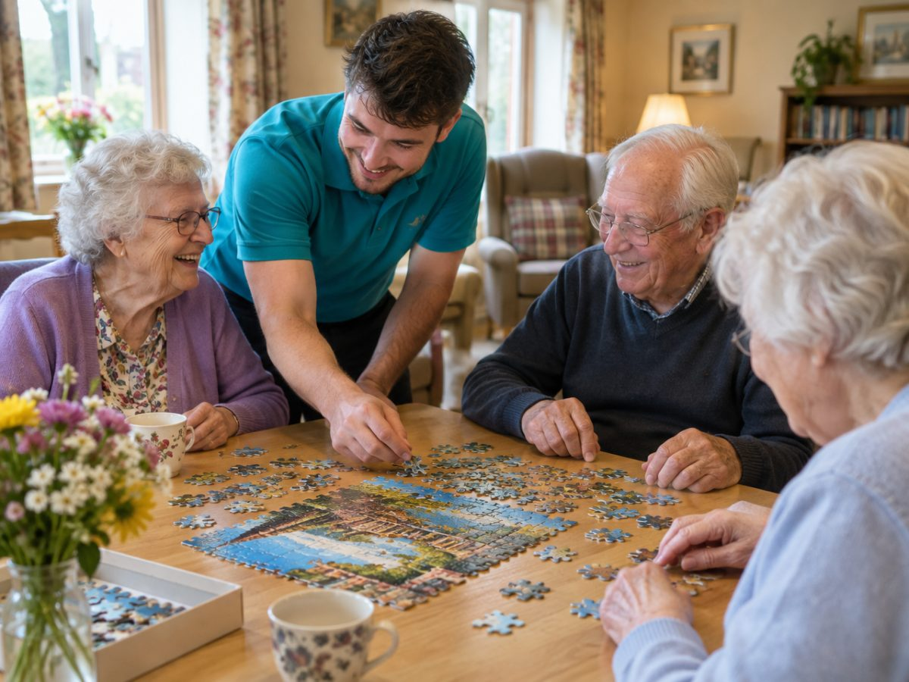
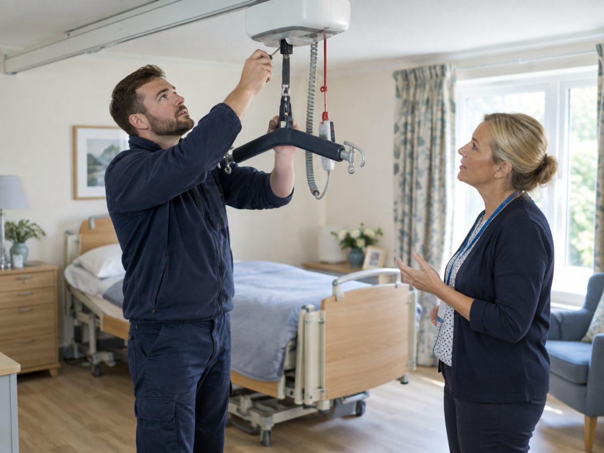

Safe, timely care starts here.
Less paperwork. More time for care.
Your team didn't come into care to chase paperwork. CarePlus brings residents, medicines, rotas, compliance and suppliers into one place, so the people in your care get safe, timely support every day.
Or explore services for your part of careCare is hard enough. The admin shouldn't make it harder.
Whether you run a nursing home, a home care branch or a nursery, the same things get in the way of good care.
Paper that hides problems
Missed signatures on MAR charts and handwritten notes only come to light at the end of the month, or during an inspection.
Shifts filled by text message
Rotas are rebuilt every week and gaps are covered with late-night calls and group chats.
Inspections that take over
Evidence lives in folders, inboxes and people's heads, so getting ready takes weeks.
Systems that don't talk
Care records, rotas, payroll and ordering sit in different places, and someone has to join them up by hand.
CarePlus puts all of it in one place, shaped for your part of care. Find yours below
Find the CarePlus made for you
Pick your area to see the problems we solve for you, the services you can use today and how to get started.
Services that deliver care and support every day.
Nursing homes
Run safe medication rounds, control drugs properly and stay inspection-ready across every unit.
- eMAR and medication rounds
- Controlled drugs register
- Inspection pack

Residential care homes
From the first enquiry to daily care, family updates and billing, for 24-hour non-nursing homes.
- Enquiry to admission
- Person-centred care plans
- Family portal
Home care
Plan rounds, verify visits, manage medicines in clients' homes and run payroll for your carers.
- Rota and route planning
- Live visit monitoring
- Carer app that works offline
Supported living
Support plans, keyworker sessions, commissioned hours and property upkeep across every address.
- Commissioned hours
- Support plans and keyworkers
- Equipment passports with QR
Mental health services
Keep equipment safe, stock in date and agency staffing under control in calm, clear workspaces.
- Equipment workspace
- Stock and suppliers
- Healthcare agency
Learning disability services
Specialist equipment, consent-led family sharing and partner access for contractors and suppliers.
- Specialist equipment upkeep
- Consent-led family portal
- Partner portal
Nurseries and childcare
Live ratios, EYFS learning journeys, funding claims and a parent portal for early years settings.
- Live room ratios
- EYFS learning journeys
- Funding and billing
Hospitals
Discharge patients to care providers who reconcile every medicine and admit them through a clear, tracked process.
- Safer discharge to care
- Medication reconciled line by line
- Compliant agency staff
Clinics and GP practices
Your medication changes and reviews reach the care teams who give the medicines, recorded and signed off.
- Medication changes followed through
- Audited eMAR records
- Pharmacy change notices
Laboratories
Reach care providers through the supplier marketplace today, and pilot sample and results tools in early access.
- Supplier marketplace
- Outbreak and infection records
- Early access: results
Pharmacies
Receive reorders, change notices and delivery requests from the care providers you supply.
- Electronic reorders
- Change notices
- Delivery tracking
Staffing and recruitment agencies
Onboard candidates, keep them compliant, fill shifts fast and invoice from approved timesheets.
- Candidate compliance
- Shift matching
- Timesheets and invoicing
Carers, nurses and support workers
Your shifts, timesheets, training and pay in one app, with extra shifts when you want them.
- Shifts and visits
- Timesheets and payslips
- Training and certificates
Suppliers and vendors
Reach care providers through the supplier marketplace, win group orders and track them to delivery.
- Supplier marketplace
- Group buying
- Order tracking

Technicians and contractors
Receive maintenance requests, send quotes and keep care settings safe and running.
- Maintenance requests
- Quotes and scheduling
- Permits and inspections
Commissioners and local authorities
See commissioned hours, quality evidence and notifications from the providers you fund.
- Commissioner portal
- Commissioned hours
- Evidence packs
Up and running without the upheaval
You don't have to change how you care. We fit CarePlus around the way your service already works.
Tell us about your service
Choose your part of care and tell us what you need. Register, or book a demo first if you'd like to see it.
We set CarePlus up with you
We load your people, places and records, and invite your team. Each person gets the access their role needs.
Everyone works from one record
Managers, nurses, carers, families and partners each see what they need, on a computer, tablet or phone.
One record for care, compliance and your workforce
Once you're set up, every team works from the same information, and each person sees only what their role allows.
Medication you can trust
eMAR, rounds, controlled drugs with two witnesses, stock ledgers and transitions of care. Administration records can't be overwritten.
Workforce and rota
Shifts, rotas, routes, attendance, timesheets, payroll, leave, training and hiring.
Compliance and governance
Audits, a risk register, statutory notifications, a compliance framework and evidence packs.
Stock, equipment and suppliers
Stock control, QR equipment passports, work orders, procurement and group buying.
Built for the reality of regulated care.
CarePlus already runs nursing homes, home care branches, nurseries, agencies and supported living services. Under every one of them sit the same safeguards: people make the decisions, records can't be quietly changed, and your data stays yours.
Ready to give your team more time for care?
Register your organisation and we'll get you set up. Want to see it first? Book a demo. Already using CarePlus? Sign in.